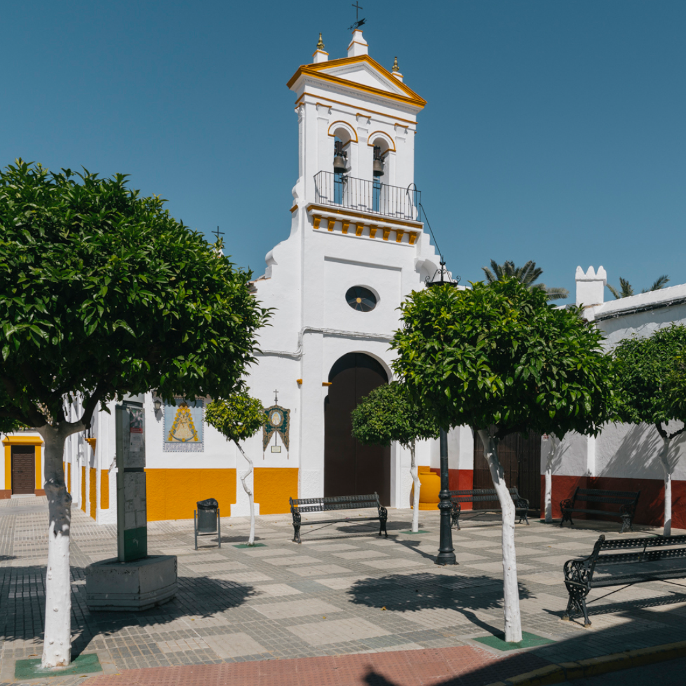
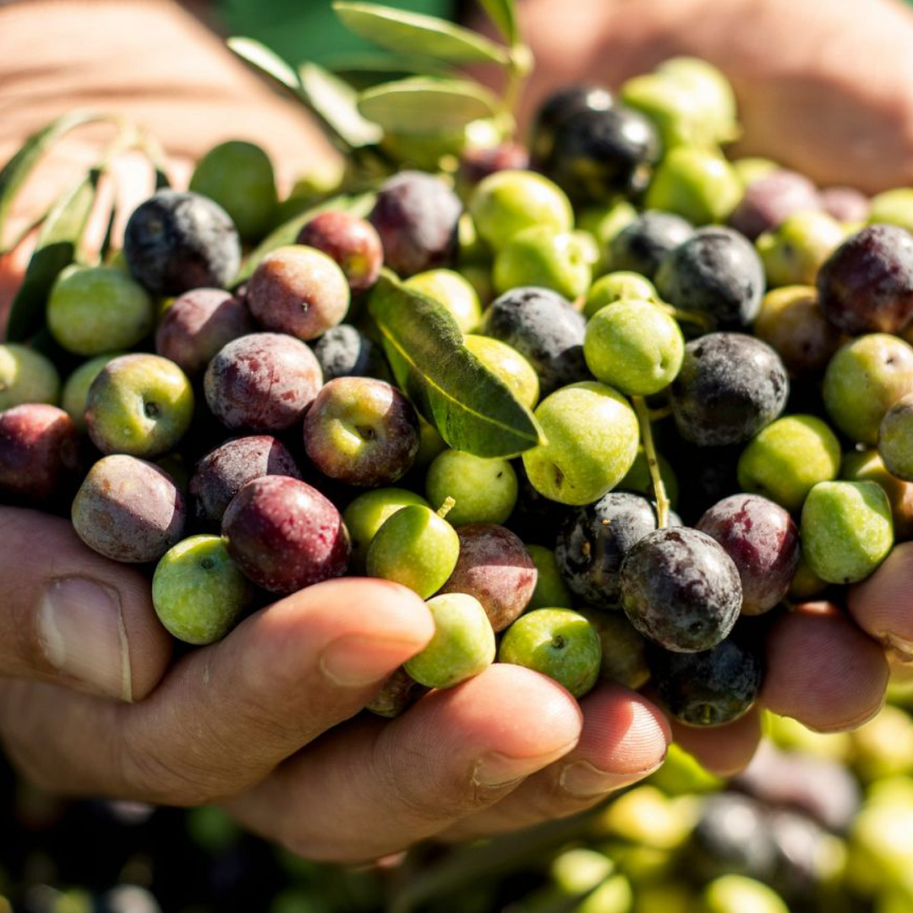

La Bodega La Sacristía es un pequeño restaurante de gran tradición culinaria, ubicado estratégicamente en Almensilla, un encantador pueblo del Aljarafe sevillano. Formando parte de la conocida Ruta del Mosto, nuestra bodega es punto de encuentro para quienes buscan disfrutar de la cocina local, el vino joven y la calidez de un entorno auténtico y familiar.
En Almensilla vas a disfrutar de la esencia de un pueblo andaluz caracterizado por su tradición aceitunera y por sus haciendas. Comienza tu ruta por esta localidad en la Plaza de la Iglesia, donde se ubica el ayuntamiento, que destaca por su reloj con campanario de hierro. En este mismo lugar puedes visitar el templo mayor del pueblo, la iglesia de Ntra. Sra. de la Antigua, de origen mudéjar, que originalmente era el oratorio de la hacienda de San Antonio.


Una parada en la que degustar con tranquilidad el mosto y la aceituna de mesa. Ubicada en una meseta al sur del Aljarafe, este enclave sevillano aún conserva algunas haciendas centenarias concebidas para la recolección de la aceituna y la producción de aceite. Se encuentra entre Mairena del Aljarafe, Palomares del Río, Coria del Río y Bollullos de la Mitación, limitando con las marismas del coto de Doñana. Abunda el olivar y su término es atravesado por el arroyo Riopudio.